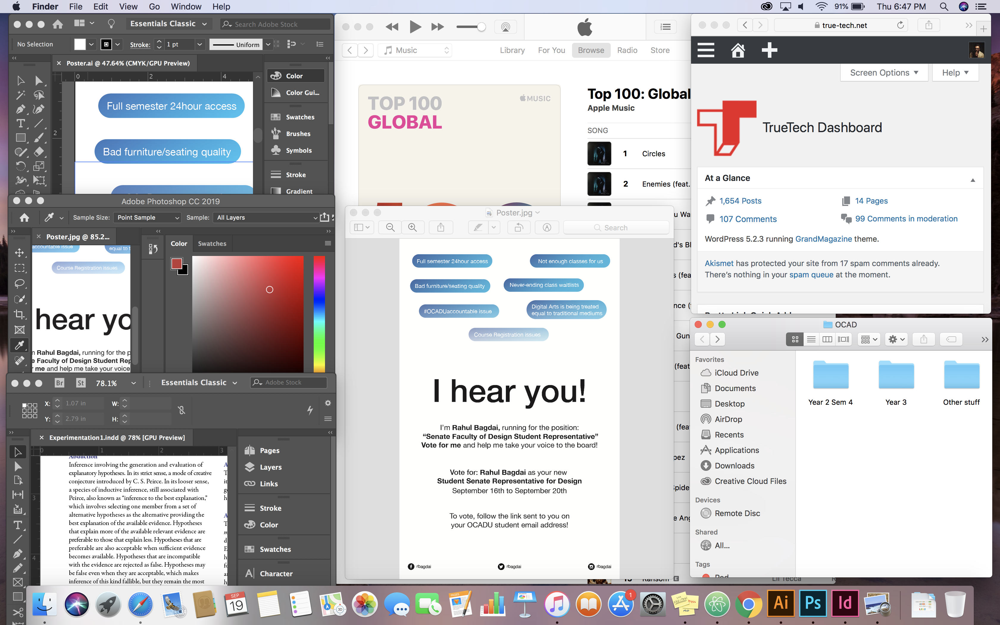

Here's my Tableau 2 exercise
click on the image to open a full-screen version

The Tableau 2 assignment represents me through various desktop Windows the programs that I use daily, and my work, interests and more!
- The juxtaposition of the windows symbolizes the priority of the program, i.e. Apple Music sitting at the back is the least in hierarchy, overlapped by other windows, but shows my habit of listening to music during my routine.
- The juxtaposition of the final render, v/s the adobe suite windows showing my workflow demonstrates the constant reiteration and experimentation that goes behind my design work.
- The window showing my website and authoritative contents represents my contributions to the world of tech, and running a business on the side (with school).
- The folder structure in the bottom-right window shows my constant need of being organized.